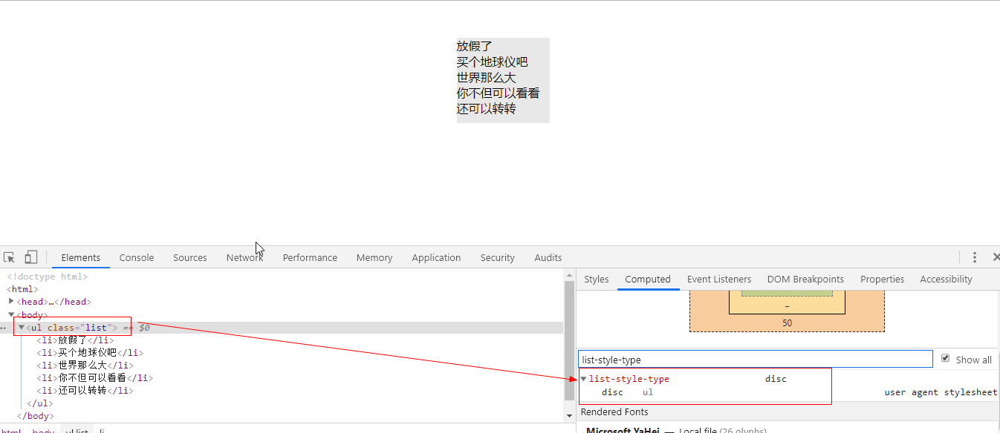
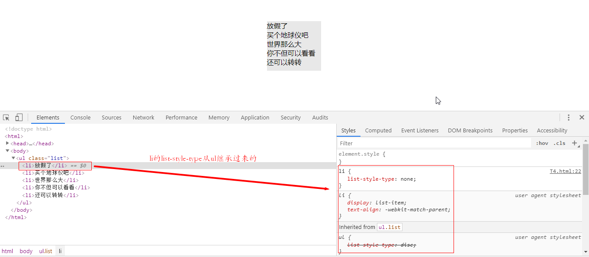

很多时候我们都需要多对列表元素进行初始化，方法是给列表元素添加list-style-type: none，但作为小白的我是经常纠结一个问题：是把它加在ul中还是li中呢
我试了一下，加在ul和li都能达到同样的效果，如下
把list-style-type: none加在li上：
<!DOCTYPE html>
<html>
<head>
<meta charset="utf-8">
<title>前端小王子</title>
<style>
/*reset*/
body{
margin: 0;
}
ul{
margin-top: 0;
margin-bottom: 0;
padding-left: 0;
}
li{
list-style-type: none;
}
/*list*/
.list{
width: 125px;
margin: 50px auto;
background-color: #e8e8e8;
}
</style>
</head>
<body>
<ul class="list">
<li>放假了</li>
<li>买个地球仪吧</li>
<li>世界那么大</li>
<li>你不但可以看看</li>
<li>还可以转转</li>
</ul>
</body>
</html>
虽然可以去掉前面的符号，li的list-style-type也为none，但是ul的list-style-type仍然是disc，和我们的所希望的不符，也和w3c标准不太符合，先来看看ul的缺省值
display: block;
list-style-type: disc;
margin-top: 1em;
margin-right: 0;
margin-bottom: 1em;
margin-left: 0;
padding-left: 40px;再看li的
display: list-item;这下便一目了然了-应该把list-style-type: none加在ul中，看效果：
<!DOCTYPE html>
<html>
<head>
<meta charset="utf-8">
<title>前端小王子</title>
<style>
/*reset*/
body{
margin: 0;
}
ul{
margin-top: 0;
margin-bottom: 0;
padding-left: 0;
list-style-type: none;
}
/*list*/
.list{
width: 125px;
margin: 50px auto;
background-color: #e8e8e8;
}
</style>
</head>
<body>
<ul class="list">
<li>放假了</li>
<li>买个地球仪吧</li>
<li>世界那么大</li>
<li>你不但可以看看</li>
<li>还可以转转</li>
</ul>
</body>
</html>
li从ul中继承过来list-style-type后，ul和li的list-style-type值便都为none了
over